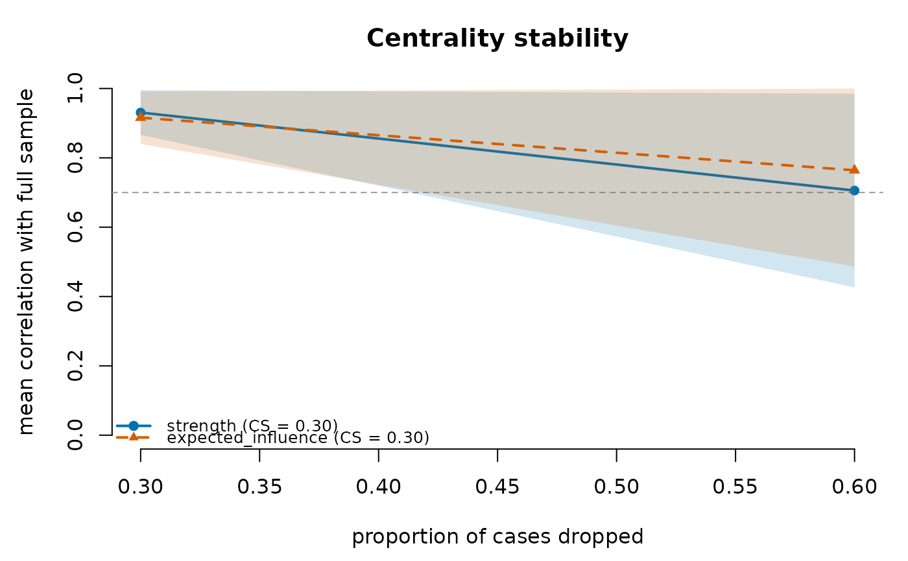

Centrality-stability coefficient (case-dropping subset bootstrap)
Source:R/plot.R, R/stability.R
net_stability.RdAsks how far the sample can shrink before the ranking of node centralities
changes. For each drop proportion the network is re-estimated on iter
random subsets without replacement, and each subset's centralities are
correlated with the full-sample centralities. The CS-coefficient of a
measure is the largest drop proportion at which the share of subsets whose
correlation is strictly greater than threshold is itself strictly greater
than certainty, the rule of bootnet::corStability(); Epskamp, Borsboom
and Fried (2018) suggest that it should not fall below 0.25 and preferably
exceed 0.5 before centrality differences are interpreted.
Usage
# S3 method for class 'psychnet_stability'
plot(x, ...)
net_stability(
data,
method = "glasso",
measures = c("strength", "expected_influence"),
centrality_fn = NULL,
drop_prop = seq(0.1, 0.9, by = 0.1),
iter = 100L,
threshold = 0.7,
certainty = 0.95,
cor_method = c("pearson", "spearman"),
labels = NULL,
estimator_args = list(),
...
)
# S3 method for class 'psychnet_stability'
print(x, ...)
# S3 method for class 'psychnet_stability'
as.data.frame(
x,
row.names = NULL,
optional = FALSE,
...,
what = c("table", "cs", "correlations")
)Arguments
- x
A
psychnet_stabilityobject.- ...
Passed to the estimator by
net_stability(); ignored by the methods.- data
Data frame or matrix (rows = observations), resampled exactly as given (see
net_boot()).- method
Estimator (see
psychnet()). Default"glasso".- measures
Centrality measures to assess. Defaults to the two recommended for psychometric networks (
c("strength", "expected_influence"));"betweenness"/"closeness"and custom measures (viacentrality_fn) are also accepted. Seenet_centralities().- centrality_fn
Optional function supplying any non-built-in
measures(seenet_centralities()).- drop_prop
Proportions of cases to drop. Default
seq(0.1, 0.9, 0.1).- iter
Subsets per proportion. Default 100.
- threshold
Correlation a subset must exceed (strictly) to count as stable. A single number in (0, 1). Default 0.7.
- certainty
Share of stable subsets that must be exceeded (strictly). A single number in (0, 1). Default 0.95.
- cor_method
Correlation between subset and full-sample centralities:
"pearson"(default, as in bootnet) or"spearman"(rank stability).- labels
Optional node labels.
- estimator_args
Named list of estimator arguments.
threshold,cor_methodanditerare arguments of this diagnostic, so an estimator's ownthresholdorcor_methodmust go here, e.g.estimator_args = list(threshold = TRUE).- row.names, optional
Ignored (S3 consistency).
- what
For
as.data.frame():"table"(default) for the case-dropping table,"cs"for the CS-coefficients, or"correlations"for every subset's correlation.
Value
net_stability() returns an object of class psychnet_stability,
read with as.data.frame(), print() and plot().
as.data.frame(x) (what = "table") returns one row per measure per drop
proportion with columns measure, drop_prop (nominal), actual_drop
(the proportion actually dropped after rounding to whole cases),
mean_cor, sd_cor (over the defined correlations), prop_above (share
of subsets with correlation strictly above threshold; undefined
correlations and failed fits count as not above) and n_valid (subsets
with a defined correlation). as.data.frame(x, what = "cs") returns one
row per measure with columns measure and cs.
as.data.frame(x, what = "correlations") returns one row per measure per
subset with columns measure, drop_prop, subset and correlation
(NA when undefined or when the subset fit failed), from which the
CS-coefficient can be recomputed.
A failed subset fit raises a psychnet_resample_failed warning carrying
the first error; a failed full-sample fit raises a
psychnet_estimation_failed error with the estimator's message.
print() shows the method, the subsets per drop proportion and each
CS-coefficient; plot() draws the mean correlation against the
proportion dropped, one line per measure with a +/- 1 SD band, the
threshold, and the CS-coefficients in the legend. Both return x
invisibly.
Details
The correlation follows bootnet's cor0(): 0 when either centrality vector
is constant across nodes, undefined when fewer than two values are
available. Unlike bootnet, which drops undefined correlations from the share
(na.rm = TRUE), psychnets counts an undefined correlation (and a failed
subset fit) as failing, so the CS-coefficient is never raised by subsets
that could not be compared. A measure whose full-sample centrality is
constant (for example strength in a two-node network) has CS 0 and raises a
psychnet_constant_centrality warning.
Functions
plot(psychnet_stability): Case-dropping curves with the CS-coefficients; each measure has its own Okabe-Ito colour, line type and point shape.print(psychnet_stability): Method, subsets and CS-coefficient per measure.as.data.frame(psychnet_stability): The case-dropping table (what = "table"), the CS-coefficient per measure (what = "cs"), or every subset's correlation (what = "correlations").
References
Epskamp, S., Borsboom, D., & Fried, E. I. (2018). Estimating psychological networks and their accuracy: A tutorial paper. Behavior Research Methods, 50(1), 195-212. doi:10.3758/s13428-017-0862-1
Examples
set.seed(1)
x <- matrix(stats::rnorm(200 * 5), 200, 5) %*% chol(0.4^abs(outer(1:5, 1:5, "-")))
colnames(x) <- paste0("V", 1:5)
# method = "pcor" and small iter keep this example fast; the "glasso"
# default and iter = 100 are what a real analysis should use.
cs <- net_stability(x, method = "pcor", drop_prop = c(0.3, 0.6), iter = 10)
cs # the CS-coefficient of each measure
#> <psychnet_stability> pcor, 10 subsets/proportion
#> CS-coefficient (pearson cor > 0.70 in > 95% of subsets):
#> strength 0.30
#> expected_influence 0.30
as.data.frame(cs, what = "cs") # the same, as a data frame
#> measure cs
#> 1 strength 0.3
#> 2 expected_influence 0.3
as.data.frame(cs) # correlations by drop proportion
#> measure drop_prop actual_drop mean_cor sd_cor prop_above
#> 1 strength 0.3 0.3 0.9306284 0.06450754 1.0
#> 2 strength 0.6 0.6 0.7056495 0.27932616 0.7
#> 3 expected_influence 0.3 0.3 0.9158786 0.07540226 1.0
#> 4 expected_influence 0.6 0.6 0.7640418 0.27749172 0.6
#> n_valid
#> 1 10
#> 2 10
#> 3 10
#> 4 10
plot(cs) # mean correlation by drop proportion
